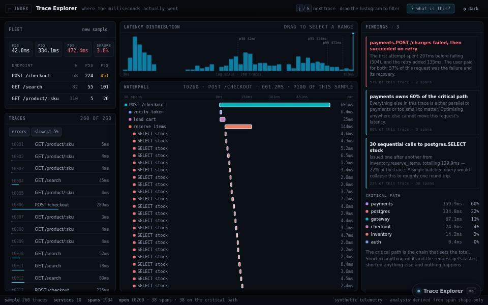

engineering tool · about 5 min · The Engine Rooms
Trace Explorer
Where a slow web request actually spent its time, explained in sentences instead of charts.

The problem
Tracing dashboards show where the time went but not why.
What it does
- 260 traces across ten services
- A span waterfall with the critical path marked
- Findings written in sentences
The most interesting decision
The analyser never sees the answer
The generator injects problems at random, but the analyser only ever sees spans, exactly as it would with real telemetry.
Built with
- Span waterfall
- Critical-path analysis
- Findings in sentences
Evidence
260 traces across ten services, explained in words. Read its tests
Its world
Terraces of spans cascading down, with the critical path lit.